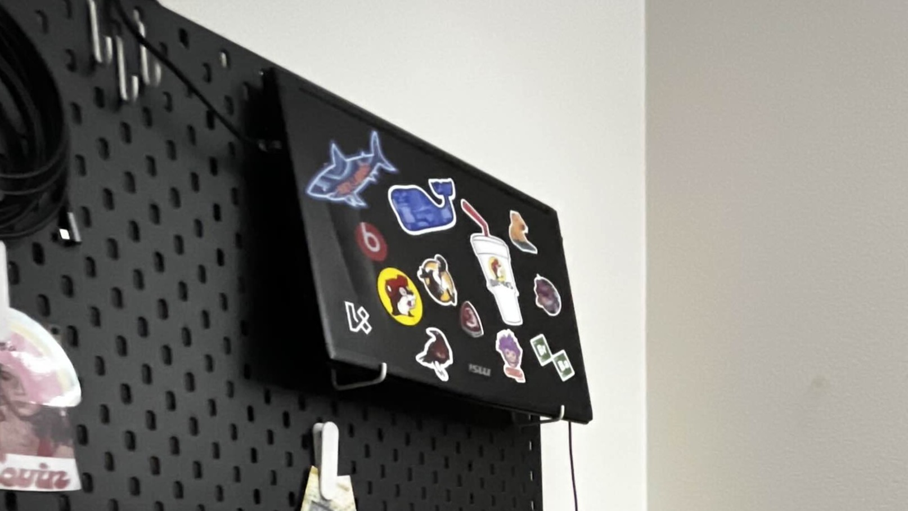

For this project, I built a home server using an old laptop that I had sitting around for years. The main reason I built this was because I wanted to get into home automation using Home Assistant (HA), but I didn't want to spend $160 on their hardware to host HA. So I decided to repurpose an old laptop and turn it into a home server. After completing the server setup and virtual machine for HA, I realized I could also host other services such as a media server, file-syncing server, as well as using it as a playground to learn technologies used in the real world like Virtualization, Linux, Docker, etc.
This project has taught me A LOT and is my favorite project so far. As mentioned before, I learned Virtualization, Linux, Docker, HA, as well as the basics of IT and Networking. I learned how to use Ubuntu and how to set up a Proxmox hypervisor. I also better understood the hardware of my machine because with limited resources and so many services that I wanted to host, I had to learn how much I could allocate to each virtual machine and container.